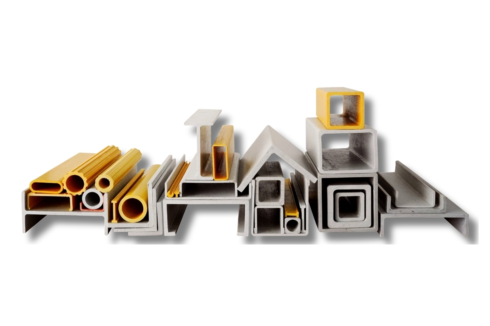

Structural FRP · PILARK Composite
GFRP Profiles
Pultruded GFRP structural profiles available in cross-sectional shapes for construction and industrial applications.
Contact PILARK →GFRP Profiles for industrial and infrastructure applications
Pultruded GFRP structural profiles available in cross-sectional shapes for construction and industrial applications. PILARK Composite supports project requirements based on application, dimensions, installation conditions and technical specifications.
Key Features
- Square and rectangular hollow
- U-channel
- Equal-angle
- I-beam, floor deck and C-channel
Product Specifications
| Manufacturing | Pultrusion |
|---|---|
| Material | GFRP |
| Applications | Structural and construction components |
About PILARK Composite
PILARK Composite, part of PT Panca Integra Laguna Reksa, provides GFRP, FRP and GRP composite solutions for industrial, commercial and infrastructure applications in Indonesia.